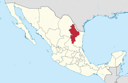
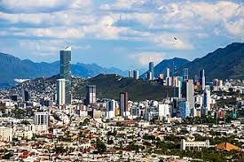
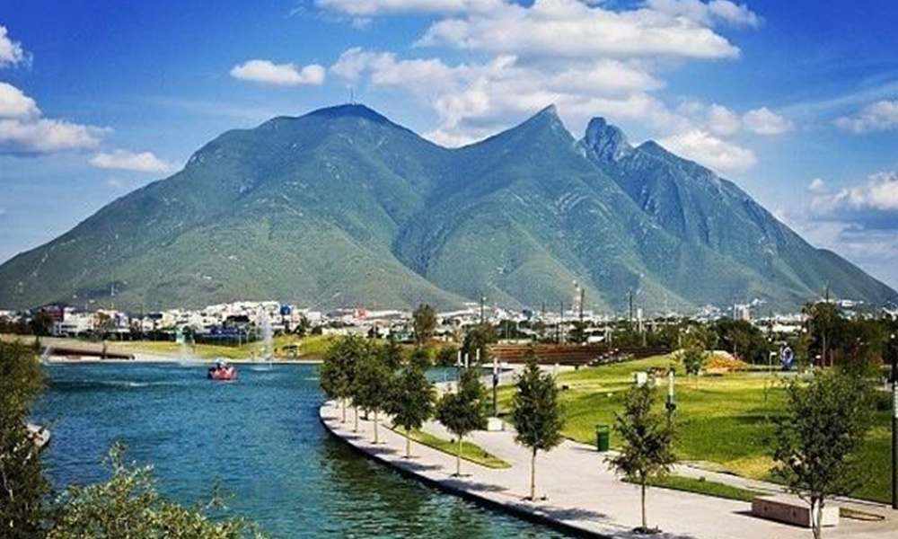
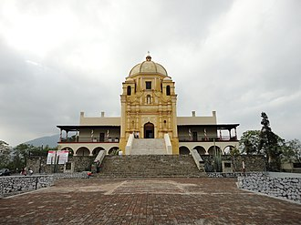

INICIO
Aqui va algo
Nuevo León, oficialmente Estado Libre y Soberano de Nuevo León, es uno de los treinta y un estados que, junto con la Ciudad de México, conforman México. Su capital y ciudad más poblada es Monterrey. Está dividido en cincuenta y un municipios. Está ubicado en el noreste del país, limitando al norte con el río Bravo que lo separa de Estados Unidos, al este con Tamaulipas, al sur con San Luis Potosí y al oeste con Coahuila y Zacatecas. Con 5 784 442 habitantes en 2020 es el séptimo estado más poblado, por detrás del Estado de México, Veracruz, Jalisco, Puebla, Guanajuato y Chiapas. Fue fundado el 5 de julio de 1824.
Aqui otro algo
Los municipios de Apodaca, Pesquería, Cadereyta Jiménez, García, General Escobedo, Guadalupe, Salinas Victoria, Juárez, San Nicolás de los Garza, San Pedro Garza García, Santa Catarina y Santiago, junto con Monterrey, forman la Zona Metropolitana de Monterrey; de gran importancia económica e industrial en el país. Otras localidades importantes son Allende, Agualeguas, Linares, Montemorelos, China, Mier y Noriega, Hualahuises, Sabinas Hidalgo, Doctor Arroyo, Mina, Cerralvo, Lampazos de Naranjo, Ciudad Anáhuac y el poblado fronterizo de Colombia.
Y mas algo
Cronistas afirman que estos lares estaban habitados por un grupo de etnias catalogadas como coahuiltecos y apaches (lipanes), estos últimos habitaban de forma errante el norte de Nuevo León. Al llegar los españoles, algunas de las etnias fueron nombradas rayados, borrados, pelones, barretados y pintados porque solían decorar su cuerpo con pinturas de colores, honrando a sus dioses o a diversos animales. No dejaron registros escritos, por lo que la historia que se conoce de la región comienza con la llegada de los colonizadores.
Y esto es algo
El territorio de Nuevo Léon fue colonizado por primera vez en el siglo XVI por inmigrantes de la península ibérica mayoritariamente conversos (judíos étnicos convertidos al catolicismo romano) y sus aliados tlaxcaltecas, grupo que impulsó notablemente la obra colonizadora. En 1577 se fundan las primeras villas de Nuevo León: las Minas de San Gregorio (Cerralvo) y la villa de Santa Lucía (Monterrey). El conquistador Luis de Carvajal y de la Cueva regresó a España para obtener de Felipe II el permiso colonizar el Nuevo Reino de León con un grupo de inmigrantes, entre los cuales se incluían familias de judíos conversos, entre ellos familiares de Carvajal que llegaron a las costas de México a bordo de la urca Santa Catalina. A pesar de que públicamente mantenían la religión cristiana, en el año 1590, tanto él como su familia, cristianos nuevos de origen judío portugués, fueron acusados de judaizar y procesados por la Inquisición. Finalmente, Carvajal muere en prisión en 1591. Ocho años después del último fracaso en los poblados de la región, el nuevo gobernador Diego de Montemayor, quien había sido nombrado lugarteniente por Carvajal, funda en 1596 la Ciudad Metropolitana de Nuestra Señora de Monterrey en el lugar en que estaban Santa Lucía y la fallida villa de San Luis.